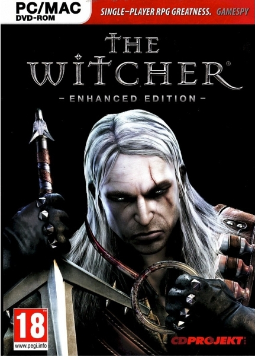
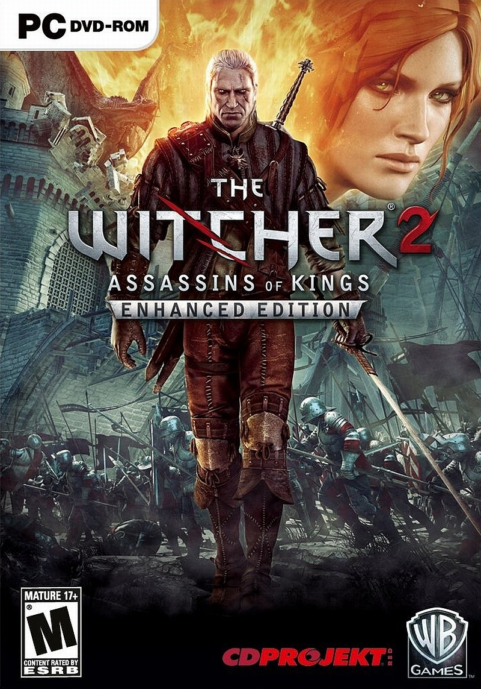
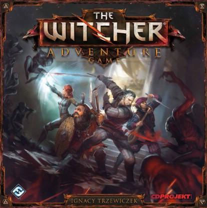
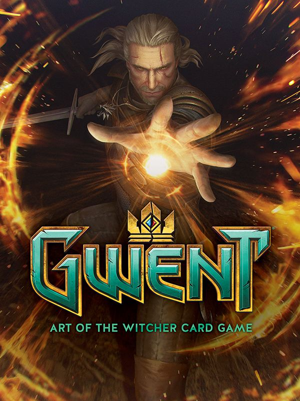
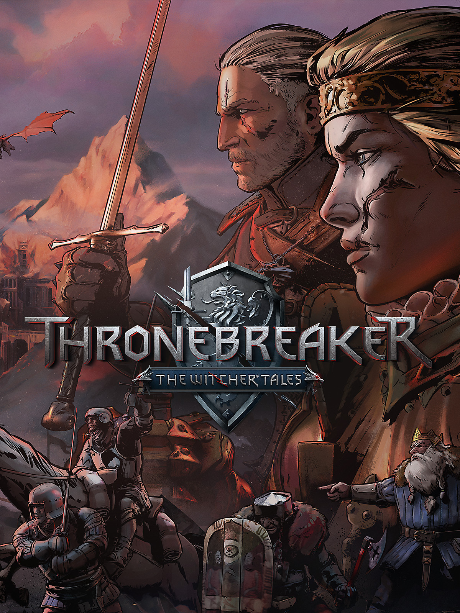

The Witcher Videgames
Game Studio CD Projekt Red have made multiple games about the Witcher. This may still be the thing that makes the Witcher what it is today. The first three games are the most prominent, these are open world rpg games. You can explore the world of the Witcher as Geralt of Rivia and play through different stories. There are hundreds of quests available so it will take a while until you get bored. The other three games are of a bit smaller scope. There are two card games based on games that are actually played in the Witcher universe. The Witcher adventure game is a digital board game.





